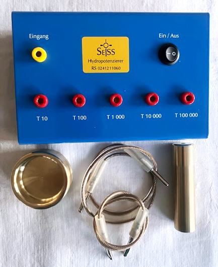
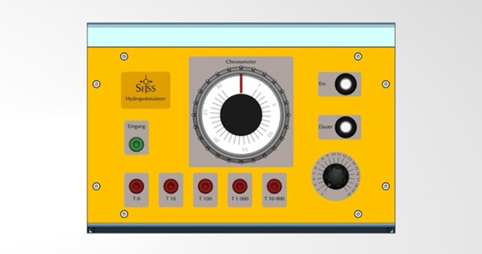

The English version of this site, see fhab.org The English version of this site, see fhab.org |
 |
|
Willi Seiß Reise-Hydropotenzierer
SEISS – HYDROPOTENZIERER
EIN GERÄT ZUM ÜBERTRAGEN VON HEILMITTELN
OHNE ELEKTRIZITÄT
OHNE FREMD-ENERGIE
VERWENDUNG DES
SEISS – HYDROPOTENZIERERS
ZUBEHÖR
 |
Verwendungszweck
Der HYDROPOTENZIERER dient zur Unterstützung und Verstärkung des Wohlbefindens. Dies geschieht, indem die reine Substanz von gesundheitsfördernden und natürlichen Wirkstoffen mittels des HYDROPOTENZIERERS nutzbar gemacht wird.
Im Messing-Becher wird der Wirkstoff bereitgestellt und über den Hand-Kontakt wird die durch den HYDROPOTENZIERER nutzbar gemachte Substanz auf das Lebensgefüge des Menschen übertragen.
Zubehör (siehe Abbildung)
1) 2 Kupfer-Kabel: ein kurzes für Eingang und ein langes für die 5 Ausgänge (T 10 bis T 100.000).
2) Hand-Kontakt (HK 1) mit Anschluss für langes Kupfer-Kabel aus Messing (Ecobrass CW724R CuZn21Si3Pb)
3) Messing-Becher zur Aufnahme der Präparate Ecobrass CW724R CuZn21Si3Pb). An der Unterseite befindet sich eine Rille, welche für Ampullen u.a. benutzt werden kann.
Praktisch, nützlich, auch für die Reise geeignet!
Funktionsweise
Diese basiert auf einem besonders reinen Wirkungsprinzip, das ohne gewöhnliche elektrische Ladung und ohne Elektrizität auskommt. Diese Wirkung basiert auf den Kräften des gereinigten und belebten Wirkstoffes, der über 5 verschiedene Potenzen (T 10 - T 100 - T 1.000 - T 10.000 - T100.000) durch den HYDROPOTENZIERER übertragen und wirksam gemacht wird.
Hinweis: Anwendung mit dem Hand-Kontakt über die rechte Hand wirkt auf die physisch-ätherische Ebene – über die linke Hand auf die seelische Struktur des Menschen.
Zur Verwendung sind u.a. geeignet:
1. Die Heilpflanzen-Tinkturen zum Einsatz des HYDROPOTENZIERERS. Zum Bedarf gibt es die hauseigenen Tinkturen des Achamoth Verlages – FHaB,
2. Globuli der Wala, Weleda, DHU usw. in jeglicher Potenzstufe.
3. Ampullen mit geeigneten Substanzen in jeglicher Potenzstufe
Zur Verwendung nicht geeignet sind u.a.
1. Tinkturen mit mehr als 15% Alkohol
2. Chemische Substanzen jeglicher Art
3. Substanzen in farbigem Glas- oder in Kunststoffbehältern oder mit Kunststoff oder Aluminium-Deckel.
4. Sog. „wesenlose“ Composita, d.h. nicht geistig veranlagte Zusammenstellungen.
BEHANDLUNGSVORSCHLÄGE
Zum Beispiel bei Grippe, Husten, Erkältung, Halsweh, usw. platziert man Hirtentäschel in die Schale, als Tinkturen-Ampulle, oder auch Globuli) und stellt die Potenz ein für die Dauer von:
T1.000 3 Minuten, danach
T10.000 5 Minuten, danach
T1.000 3 Minuten
Bei Herzbeschwerden: Arnika, Tinkturen-Ampulle oder auch Globuli, Arnica mit jeglicher Potenzstufe, und gleichen Einstellungen wie oben.
Bei Verwundungen, wie Schürfwunden, Schnittwunden, Hautschürfungen jeglicher Art: Bingelkraut, besser bekannt als Mercurialis perennis,, Tinkturen-Ampulle oder auch Globuli (Einstellungen w.o.).
Bei Aufregung und Stress: Z.B. Johanniskraut, Tinkturen-Ampulle oder Globuli, oder auch Nachtkerze (Einstellungen w.o.).
Bei Kopfweh, Migräneartig durch schlechte Stoffwechsel verursacht: Sumpfminze, Tinkturen-Ampulle oder auch andere gute Kopfwehglobuli. (Einstellungen w.o.).
Bei Verkrampfung jeglicher Art: Cuprum muraticum, oder auch Eisenhut, wie auch Tollkirsche, (aber nur aus der Blüte hergestellt!), entweder Tinkturen-Ampulle oder Globuli. (Einstellungen w.o.)
Bei einem „verdorbenen Magen“ Das gute Russenkraut (Zypressenwolfsmilch), Tinkturen-Ampulle, oder auch die guten Magenglobuli, Wala (Einstellungen w.o.)
Bei Verstauchungen aller Art: Der gute Beinwell, abwechselnd mit Arnika, Tinkturen-Ampulle oder auch Globuli, resp. Tabletten. (Einstellungen w.o.)
DIE THERAPEUTISCHE INTENTION
VON WILLI SEISS
MIT DEM HYDROPOTENZIERER
Zuerst ein Hinweis vorab: Der Hydropotenzierer hat eine hohe Kraft, eine sehr hohe Potenz, als Ausgangswert. Sie ist dem Buddhi des Menschen gleich, das im Sinne der geistig verstandenen Potenzierung vergleichbar mit D100.000 (oder C1000) ist. Also ist die Stufe T10.0000 der Skala des Hydro-Potenzierers die höchste Potenzierung.
Die Stufe T100.000 (Beim 1. Gerät der Serie, R0161211040, noch T 0 genannt) ist die „Stoffesmutter“. Man kommt zu ihr, wenn man das Präparat durch die Substanz des Übertragungselements, der Hydrozelle, leitet. Die anderen Stufen nähern sich wieder mehr dem Irdischen – in Dezimalschritten. Diese Potenzstufen gelten für das neue Gerät, nicht für das alte Jentikalgerät, nicht weil es ein anderes Prinzip, sondern weil es ein wenig anders konstruiert ist. Willi Seiß war sehr daran interessiert, die Wirkung seiner Elemente mit den Metallrezepturen durch den Hydropotenzierer zu erweitern. Und so enthält ein Prototyp dieses Geräts ein Fach, in dem man ein Element hineinstellen konnte. Später hat man dann überlegt, dass die Messingschale oder die Platinen für die Präparate genügen würden.
Was hat Willi Seiß sich dabei gedacht? Er wollte mit diesen Metallrezepturen die Menschen heilen, denn er hoffte, dass man den Menschen aus dem Ätherischen, aber aus dem geistig Ätherischen heilen könnte. Denn die Metalle sind geistige Vorbilder für die Struktur des Menschen, dachte er.
Auch Hieram Abiff, der Bauherr des Tempels von Salomo, suchte nach einem Heilmittel durch die Metalle – einen Metallguss, ein ehernes Meer, sagt die Legende. Es war aber sein hermetisches Wissen, dass die Metalle zusammen den Menschen zum „Klingen“ bringen würden, denn die „Harmonie der Sphären“ hat als Grundlage die geistigen Metalle, d.h. diejenigen Kräfte, die im Kosmos „klingen“, in den Menschen aber wirksame Funktionen versorgen und in der Erdenwelt Metalle entstehen lassen.
Die Präparate von Willi Seiß „verschmelzen“ die Metalle auf ätherische Weise, denn durch ihre Reinheit und ihre fein zermahlene Stabstruktur sind sie in hohem Maße der Umgebung gewidmet. Sie haben dadurch eine sehr große Ausbreitung im Raum und können wie Antennen die ätherischen Strömungen vermitteln.
 |
SEISS – Hydropotenzierer R 0161211040
Hier noch ausgestattet mit Zeitschaltuhr
* (PDF) Flyer für den REISE – HYDROPOTENZIERER (Download als PDF; 1.6Mbit)
** (PDF) Ausführliche Gebrauchsanleitung, auch gültig für das Gerät ohne Zeitschaltuhr. (Download als PDF; 2.9Mbit)
Bücher


Chakra-Werk
von Willi Seiß
» Gesamtübersicht
» Der Weg der höheren
Erkenntnisse auf der
Grundlage der Chakra-
Kunde
» Über die Notwendigkeit,
Kenntnisse über die
Chakren zu haben
» Aus der „Einführung“
» Verzeichnis der Themen
» Leseprobe
Bis jetzt liegen 37 Serien vor.
Aktuelle Werke